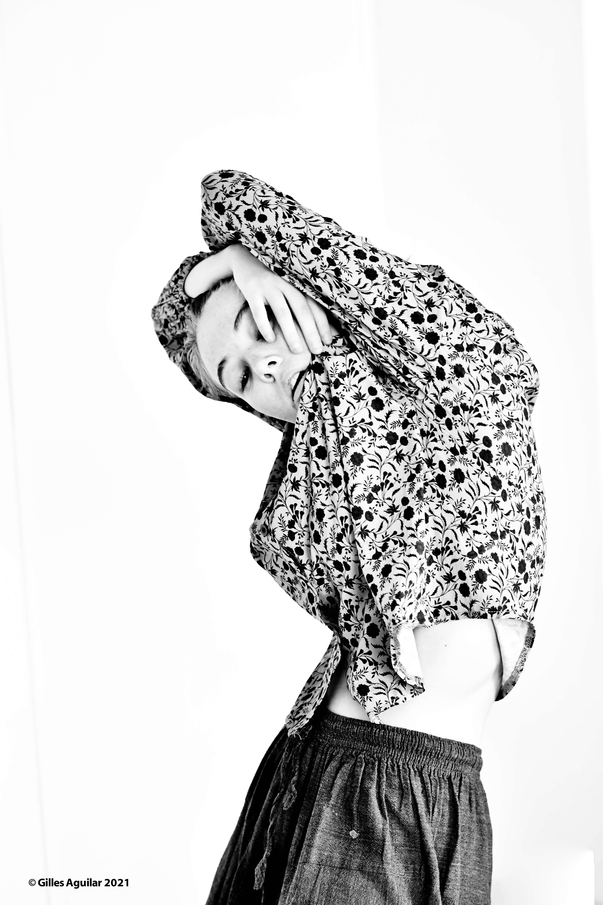
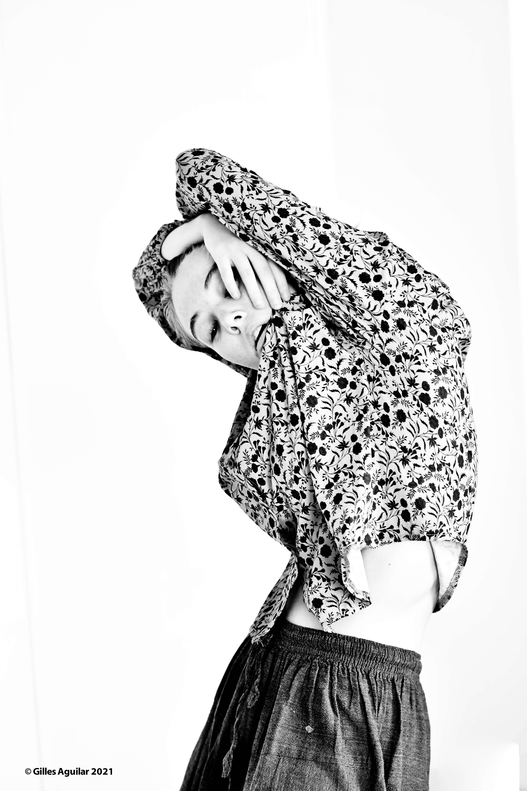

Charlotte Brossard
Danseuse professionnelle spécialisée en danse contemporaine.
Ayant reçu une formation classique, jazz et broadway.
Danseuse interprète de la Compagnie Ancolie et Aufait.

Quelques photos de moi


 
